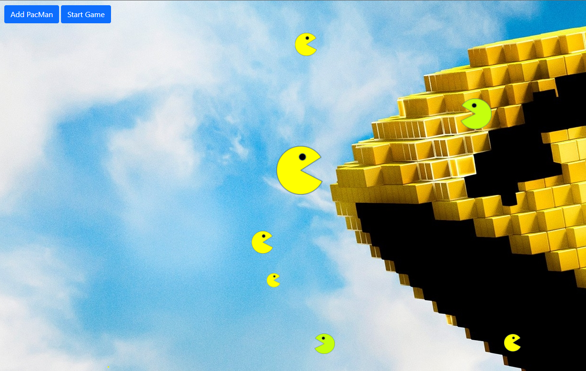
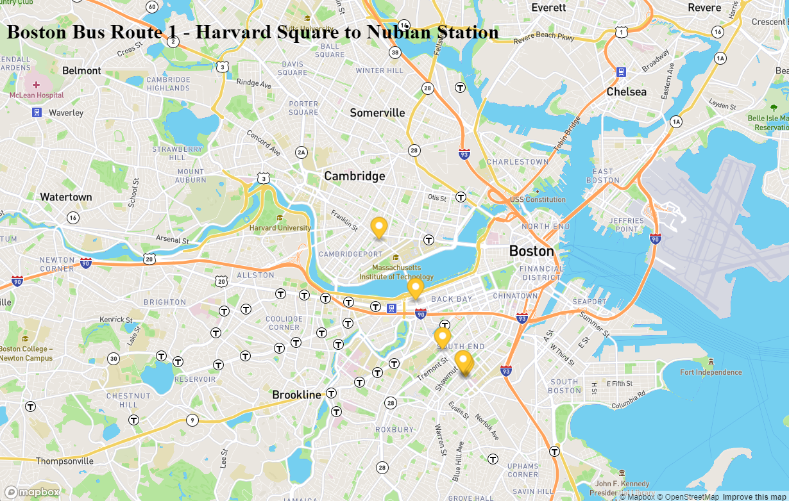

  <!-- Projects -->

  <section class="container-fluid" id="projects">

    <h2 class="project-heading">Projects</h2>
    <div id="carouselExampleControlsNoTouching" class="carousel slide" data-bs-touch="false" data-bs-interval="false">
      <div class="carousel-inner">
        <div class="carousel-item active">
          <h2>This project creates PacMan when the user clicks the Add button. Once satisfied with the PacMan creation, the user clicks the Start button and let the PacMan loose.</h2>
          <a href="https://github.com/chung-sun/pacmen"></a>
          <em>PacMen Factory</em>
        </div>
        <div class="carousel-item">
          <h2>This project will track your mouse mevements. As you move your mouse, the positions of the eyes will move. You can click on the eye and it will close.</h2>
          <a href="https://github.com/chung-sun/eye-exercise"></a>
          <em>The Eye Exercise</em>
        </div>
        <div class="carousel-item">
          <h2>This project uses Mapbox GL to render Massachusetts Bay Transportation Authority Orange Bus Line 1 travelling from Harvard Square to Nubian Station.</h2>
          <a href="https://github.com/chung-sun/real-time-bus-tracking"></a>
          <em>Bus Tracking</em>
        </div>
      </div>
      <button class="carousel-control-prev" type="button" data-bs-target="#carouselExampleControlsNoTouching" data-bs-slide="prev">
        <span class="carousel-control-prev-icon" aria-hidden="true"></span>
        <span class="visually-hidden">Previous</span>
      </button>
      <button class="carousel-control-next" type="button" data-bs-target="#carouselExampleControlsNoTouching" data-bs-slide="next">
        <span class="carousel-control-next-icon" aria-hidden="true"></span>
        <span class="visually-hidden">Next</span>
      </button>
    </div>

    
    
    
    

  </section>